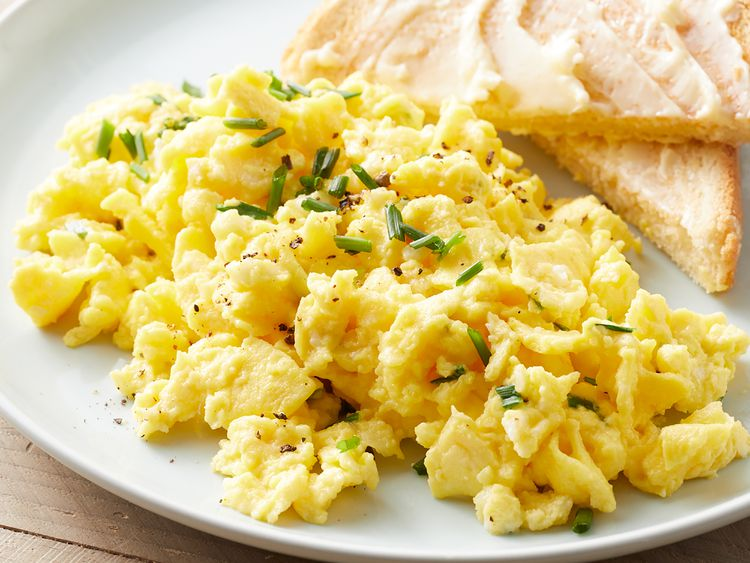

Scrambled eggs

Scrambled eggs with toast
amazing scrambled eggs recipe that is easy and quick to make, no preperations just some eggs, butter and milk
Ingredients
- 4 med or large eggs
- Butter
- Salt to taste
Method
- Place 4 eggs into a pan.
- Add in a knob of butter.
- Turn the hob on to high heat.
- break up the egg yokes and continusoly stir the eggs and butter.
- Stir for about 60 seconds then take the pan of the heat for 30 seconds while stil stirring.
- After 30 seconds place the pan back on the heat for another 60 seconds then back off for another 30 seconds, all while stirring.
- The mixture should start to thickin up, once this starts and there is next to no liquid left, add salt to taste.
- Keep stirring then once you hear the food sizzling, that means its done.
- Serve the eggs on toast with/or clives for extra taste.
- Enjoy!